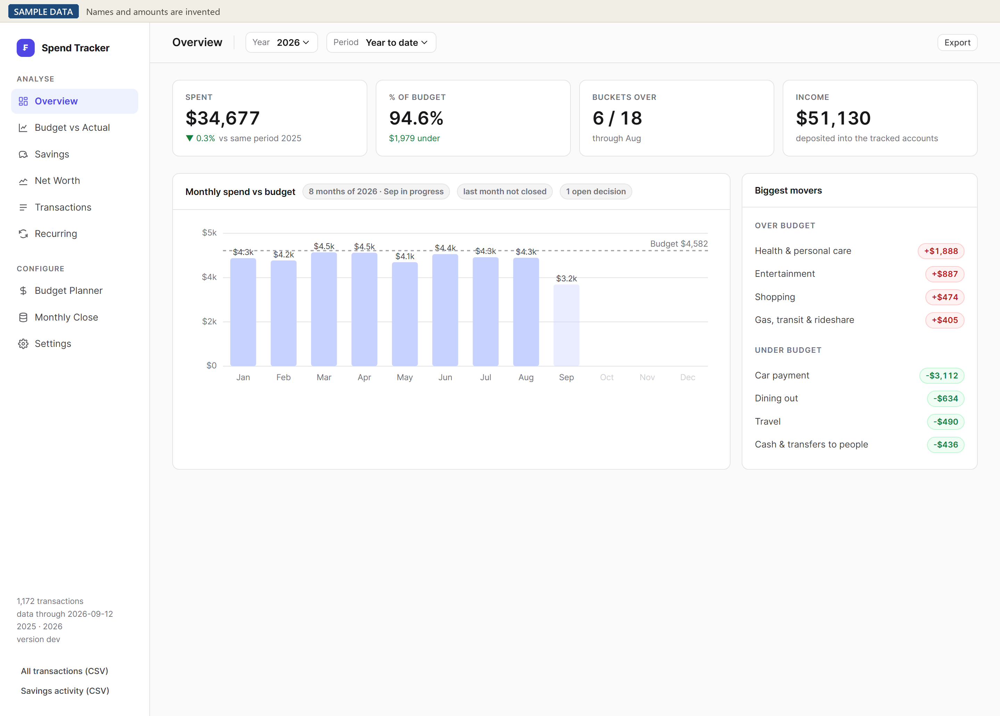

Case study
A monthly close for our own budget
I kept giving up on budget spreadsheets, so I built an offline app that runs our household's monthly close from our bank's CSV exports.
- Role
- Built it. I decided what it does and how it behaves, and I test every build. Claude wrote the code, the tests and the docs.
- When
- Started August 25, 2026. In testing now.
- Tools
- Python (standard library only), JavaScript, GitHub Actions, Claude
- Results
- 393 automated tests, all passing
- Windows and Mac installers
- Our household's monthly close runs on it
You can download the test version for Windows or Mac and try it on the built-in sample household.


The problem
I used Mint for a while and then stopped. Then I built my own budget spreadsheet in Excel, and later I moved it to Google Sheets.
But keeping the budget current and comparing it to actuals every month was a pain. So I just got too lazy to update it.
I wanted something easier and more automated, so I'd actually do it every month.
What I built
It's an app that runs on your own computer. You download CSV exports from your bank, card and wallet accounts, drop them in, and it sorts every transaction into spending buckets.
- Spending vs budget, savings, net worth, recurring charges and a monthly close, across 9 views.
- A setup wizard that recognizes your bank's file, guesses the account type and imports it right away. It comes with settings for six banks and cards, and others work too. The first time you load a file it doesn't recognize, you map the columns once.
- No bank connection. That would've meant more complexity and probably paying for a service like Plaid.
- Everything stays on your computer, and the only thing the app talks to is itself. I like that it's offline, it keeps the data a little more secure than something in the cloud.
- Installers for Windows and Mac that GitHub builds automatically.
- A made-up household with 10 accounts, so you can look around before loading your own.


How I know it works
- There are 393 automated tests, and they all passed on the September 26 version.
- It has three guards against counting the same money twice. A card payment from checking isn't counted as spending, since the purchases are already on the card. A Venmo payment funded from checking gets counted once. And four identical $2.90 fares on the same day stay four transactions instead of collapsing into one.
- Nothing gets dropped quietly. Spending in a bucket that isn't in the budget shows up as Unmapped instead of disappearing from the totals.
- I test every build myself, and I run our household's close on it.
Results
- Our monthly close runs on it now.
- It went from the first commit on August 25 to 195 commits by September 26.


Limits and what's next
- There's no bank sync, so you download the CSV files yourself. I chose that, but it's still a manual step every month.
- It comes with ready-made settings for Ally, American Express, Bank of America, Capital One, Chase and Venmo, and only Ally, Chase and Venmo are marked verified so far. Every other bank needs that one-time column mapping first.
- The installers aren't signed, so Windows and Mac both warn you the first time you open it.
- If you close the browser halfway through setup, you lose your place. What you already saved stays.
- I'm the only one testing it so far. The installers are already public on GitHub, and the source goes public once testing is done.
How these numbers are sourced
Parsed from the repo at commit 9ae5075 on September 26, 2026: the 9 views, the ready-made bank settings and the 3 marked verified, the server that only listens on the computer it runs on, the standard-library-only code, the Windows and Mac release workflow, the 10-account sample household, the 195 commits since August 25, the three double-count guards, the rule against dropping transactions and the setup limitation.
Run on September 26, 2026 against that commit: 393 tests, all passing.
My own account: why I built it and what I used before, why there's no bank connection, that I test the builds and run our household's close on it, that it's in testing, when the source goes public, and that Claude writes the code.